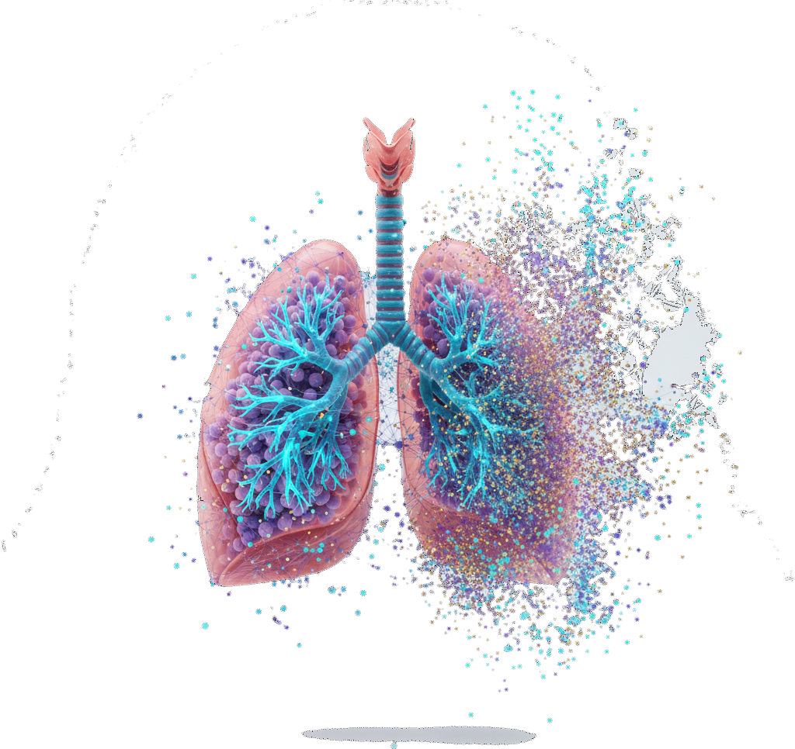
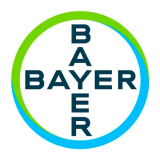
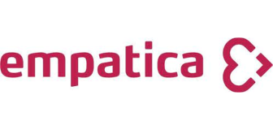

AI Screening Software
A cough-audio COPD risk-assessment algorithm, exposed as API & SaaS for community health centers, check-up centers and online clinics — paired with an analytics dashboard.
For primary careLuca Healthcare turns everyday signals — like the sound of a cough — into measurable, predictive digital biomarkers, scaling trustworthy care with Agentic AI.

Healthcare faces a dual constraint: too few physicians, and too little continuous data. Luca builds accessible, trustworthy AI infrastructure that moves care from experience to data-driven, from a single visit to continuous management, and from human judgment to an auditable, regulator-ready decision system.
See how our platform worksStarting from respiratory, we're building an assistive AI healthcare infrastructure — a self-reinforcing loop where data trains models, models drive decisions, and continuous AI interaction generates new data.
1 npj Digital Medicine — a device-invariant multimodal learning framework for respiratory disease classification. Single-modality models range AUROC 0.67–0.88.
A cough-audio COPD risk-assessment algorithm, exposed as API & SaaS for community health centers, check-up centers and online clinics — paired with an analytics dashboard.
For primary careAn integrated cough & vital-signs capture device — the front-line terminal for public-health screening and chronic-disease management across community settings.
For public healthStructured, compliant, traceable real-world data assets — built across the full screening-to-management cycle and licensed to pharma R&D, RWS and HEOR teams.
For pharma & researchConventional real-world data is retrospective. Luca's AI-patient interactions surface what's happening as it happens — we call it patient-generated real-world data (PG-RWD), captured through May's Micro-PRO.
We work with leading healthcare systems, life-science and technology companies to help patients take greater control of their health.


Partner with Luca to bring digital biomarkers and Agentic AI into the real world — from community screening to global drug development.